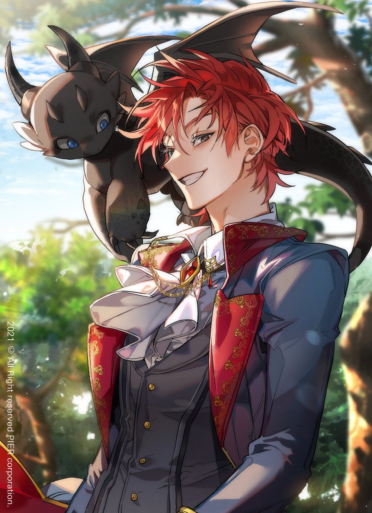
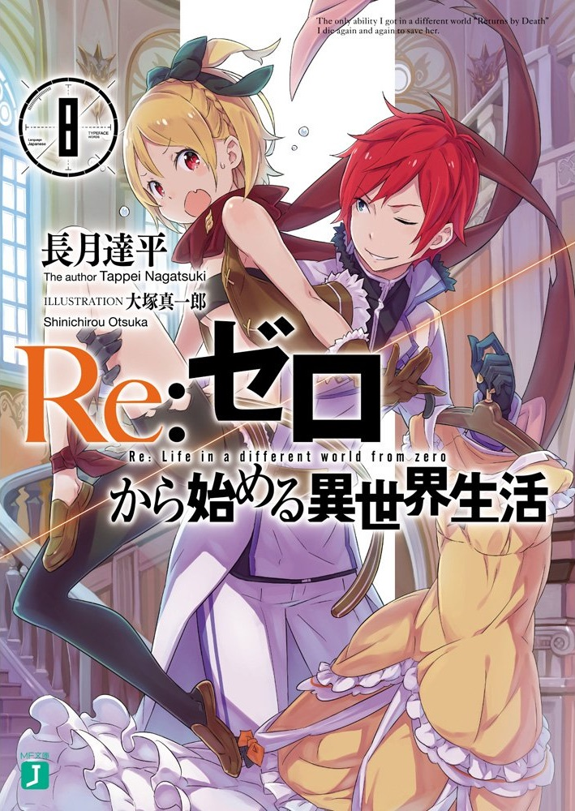
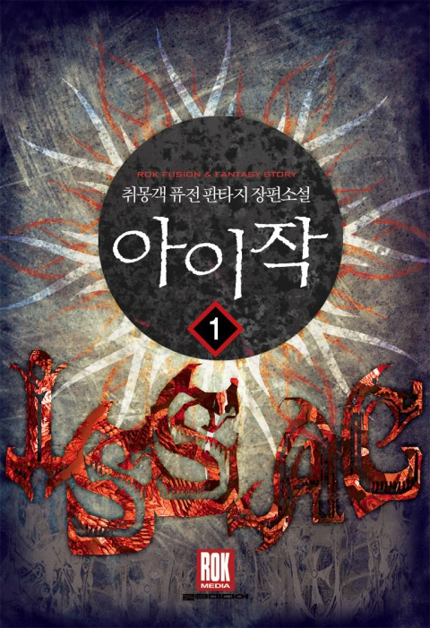

By Yosep Wahid Saepul Barkah :) |10 Januari 2020|
novel
Novel adalah salah satu jenis karya sastra yang berbentuk prosa.kisah di dalam novel merupakan hasil
karya imajinasi yang ,membahas tentang permasalahan kehidupan seseorang atau berbagai tokoh. cerita didalam
novel dimulai dengan munculnya persoalan yang dialami oleh tokoh dan diakhiri dengan penyelesaian
masalahnya.
Novel memiliki cerita yang lebih rumit dibandingkan dengan cerita pendek .Tokoh dan tempat yang diceritakan
di dalam novel sangat beragam dan membahas waktu yang lama dalam penceritaan . penokohan didalam novel
menonjolkan watak dan sifat setiap pelaku dalam kisah yang dceritakan . novel terdiri dari dari bab dan
sub-bab tertentu sesuai dengan kisah ceritanya. penulis novel disebut novelis
setelah membaca pengertian di atas kalian sudah mengetahu secara garis besar novel itu apa .oleh karena itu
sebagai pencita buku cerita (novel) saya akan merekomendasikan novel yang saya suka dan yang favorite kan
serta novel yang telah saya baca. silakan simak dan baca ya :>.
my favorite novel (online read)
- 1.Trash of count

sinopsis
-
When I opened my eyes, I was inside a novel.
[The Birth of a Hero].
[The Birth of a Hero] was a novel focused on the adventures of the main character, Choi Han, a high school boy who was transported to a different dimension from Earth, along with the birth of the numerous heroes of the continent.
I became a part of that novel as the tr*sh of the Count’s family, the family that oversaw the territory where the first village that Choi Han visits is located.
The problem is that Choi Han becomes twisted after that village, and everyone in it, is destroyed by assassins.
The bigger problem is the fact that this s*upid tr*sh who I’ve become doesn’t know about what happened in the village and messes with Choi Han, only to get beaten to a pulp.
“…This is going to be a problem.”
I feel like something serious has happened to me.
But it was worth trying to make this my new life.
- Rate: 10/10
- type: Web Novel
- From: korean
- 2.Re:Zero

sinopsis
-
Suddenly, high school student Subaru Natsuki has been summoned to another world on the way back from the convenience store. With the biggest crisis of his life being summoned to another world, and with no sign of the one who summoned him, things become even worse when he is attacked.
But when he is saved by a mysterious, silver-haired girl with a fairy cat, Subaru attempts to return the favor by helping her track down something that was stolen from her. When they finally manage to get a clue, Subaru and the girl are attacked and killed by someone.
Subaru then awakens in the place he was summoned and notices he gained the ability “Returns by Death” and has become a helpless boy that only has the ability to rewind time to a certain point by dying.
Beyond the despair, can he save the girl from the fate of death?
- Rate: 10/10
- type: Web Novel/Light Novel
- From: japan
- 3.Isaac

sinopsis
-
Insane. Traitor. Terrorist.
The title given to Joon-young, a soldier who fought a lost war. Performing the most devious last stand befitting his titles, his memories were sent to another world.
Now named Isaac, he seeks to live out his days in relative peace. But with his family wanting him dead he is sent to the Campus, the Empire’s greatest centre of Education, in hopes that he would be expelled and tarnish his position as the heir of his family.
He is told that the school will treat him as if he doesn’t exist, that he isn’t protected by its rules. But Isaac, or Joon-young, sees it differently.
There are no rules to hold him back from getting what he wants.
- Rate: 9/10
- type: Web Novel
- From: Korean